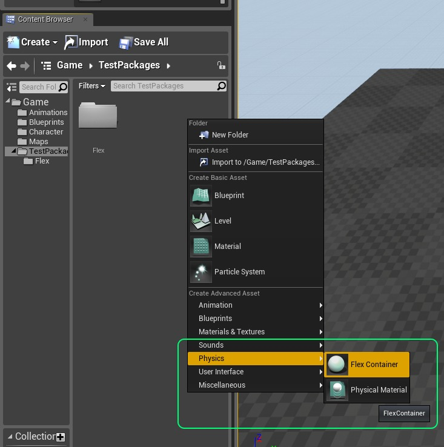
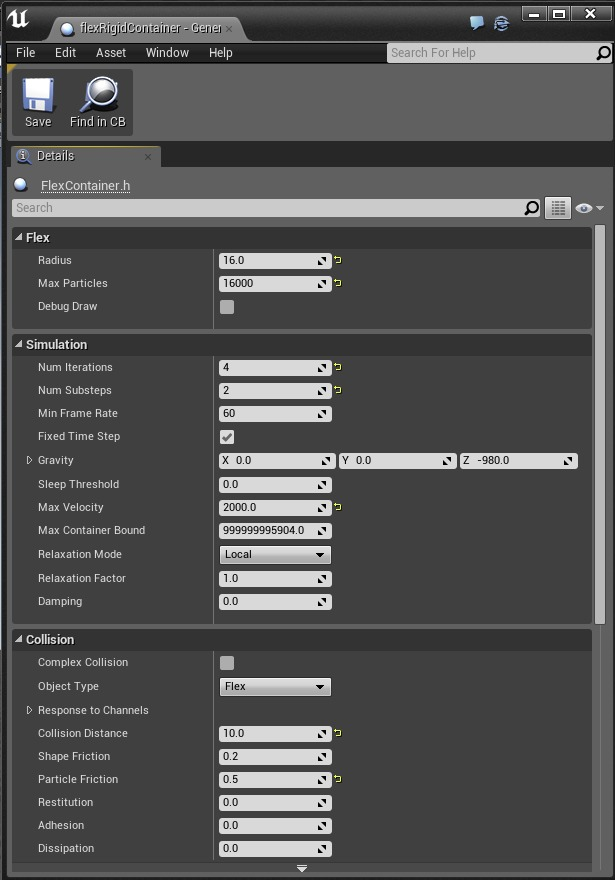
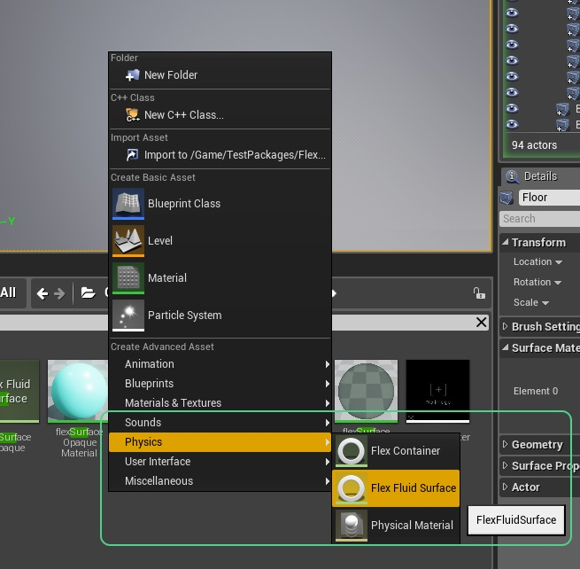
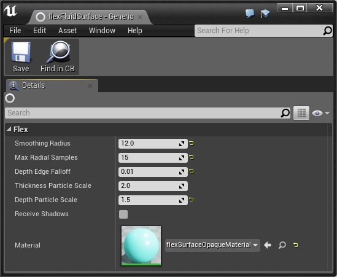
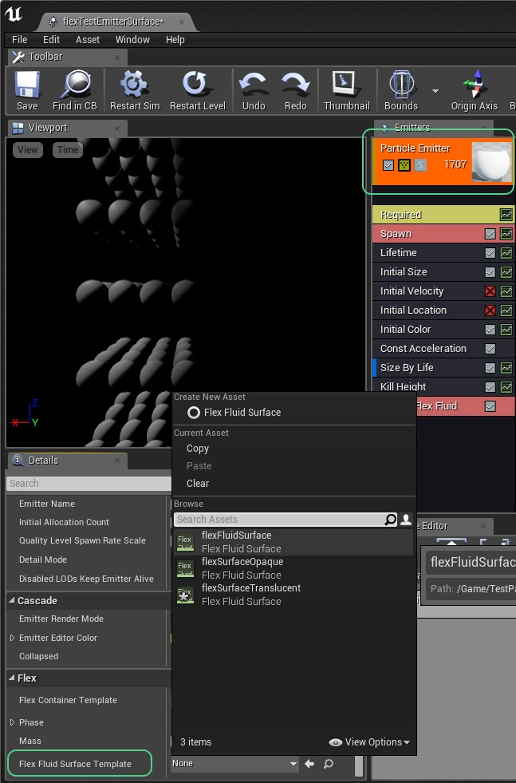
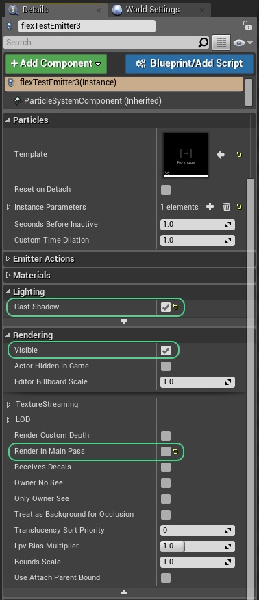
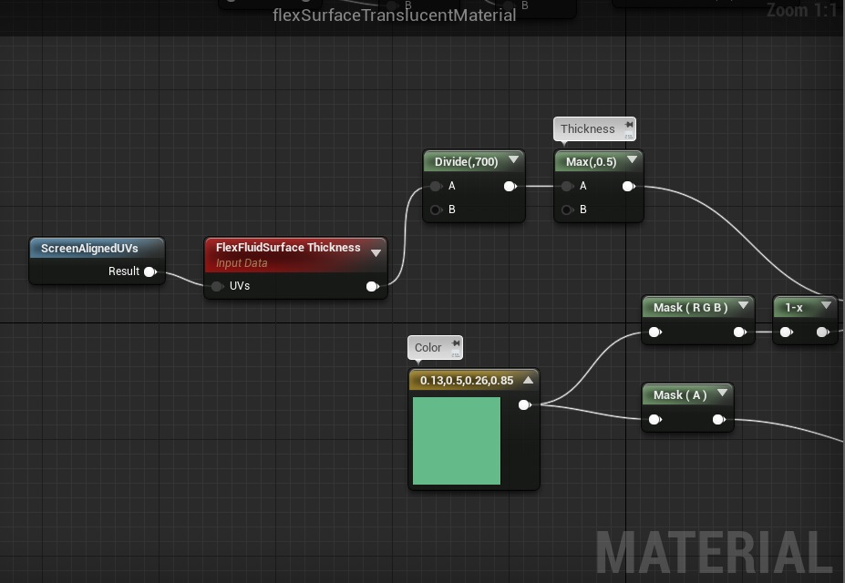
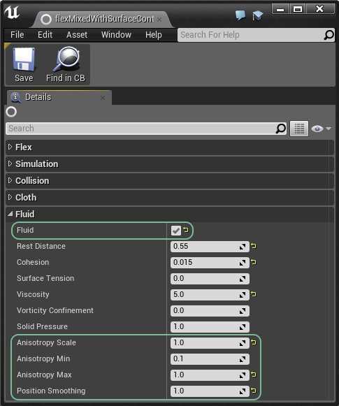

Flex - UE4 Manual |  |
Table of Contents
- Prerequisites
- Introduction
- Particle Radius
- Containers
- Phases
- Assets
- Actors
- Force Fields
- Fluid Surface Rendering
- Console Commands
- Stats
- Limitations
Prerequisites
The information in this document applies to the following software versions:
- NVIDIA Flex 0.9.0
- EpicGames Unreal 4.7
Flex requires an NVIDIA GPU of at least Compute Capability 3.0 or higher (Kepler) and an NVIDIA driver of at least version 304.54 on Linux, and 306.94 on Windows.
The Unreal 4 integration of Flex is available to all Unreal licensed developers through the NVIDIA Github channel, please visit: https://github.com/NvPhysX/UnrealEngine/tree/FleX for the latest distributions.
This documentation is designed for technical artists and developers using the UE4 Flex integration. For more background on Flex see the SDK manual included in the developer library package available on NVIDIA DevZone:
https://developer.nvidia.com/physx-flex
Introduction
Flex is a particle-based simulation library that is broadly based on the papers "Position-Based Dynamics" [1] and "Unified Particle Physics for Real-Time Applications" [2].
The core idea of Flex is that everything is a system of particles connected by constraints. One benefit of having a unified representation is that it allows efficient modeling of many different materials. Another advantage is that it allows interaction between elements of different types, for example, two-way coupling between rigid bodies and fluids.
Flex's strength lies in enabling interesting secondary effects that enhance the visual experience. It is not designed to build gameplay affecting physics because it lacks functionality such as trigger events, contact callbacks, ray-casting, serialization, etc. Although it is possible to build these capabilities on top of the core solver, they don't come in the box. For this reason it is recommended to use Flex in conjunction with a traditional rigid-body physics engine, such as PhysX.
Particle Radius
All dynamic objects in Flex are made up of particles. For efficiency all particles have the same radius, which is specified for each container. The radius is one one of the most important parameters for the simulation because it specifies the maximum interaction distance of particles.
Before authoring assets it is best to decide on a suitable radius, typical values are 5cm-10cm, although smaller and larger particles may be useful in some situations. The radius should be chosen to reflect the desired resolution of the simulated materials: the smaller the radius, the higher the resolution (and generally the more expensive the simulation). A radius that is to small can also result in tunneling (particles passing through each other), so a smaller radius generally requires a smaller time-step (or more sub-steps).
The radius has a different meaning for solid and fluid particles. For non-fluid particles, the radius represents the distance that particles will try to maintain from each other. For fluid particles the radius specifies the "smoothing radius" of SPH kernels.
Containers
Containers are where all simulation happens in Flex. They can be thought of as a type of scene, although you can have more than one container active in a level at any one time. Actors, such as particle systems, static meshes, or ropes will emit particles and constraints into the container, and will be simulated as the level is ticked.
Although containers can hold any type of Flex objects, it can make sense to specialize containers for different object types.
Creating a container
To create a container, right-click in the Content Browser, and choose .
Container Properties
Give your container an appropriate name, e.g.: flexRigidContainer, and double click to open it's property sheet.

The container holds a wide range of simulation parameters, broken into categories according to the objects they affect.
| Flex Container | |
|---|---|
| Attribute | Notes |
| Radius | See Radius section. |
| Max Particles | Each container can accommodate a fixed number of particles which may be added from any number of sources, e.g. particle emitters, rigid bodies, clothing. If the container is full then new particles will not be added, and objects may appear to stop being simulated. Max particles should be set to a conservative upper bound on the expected number of particles required. |
| Debug Draw | Enables debug draw for this container when the level is being played. Note that debug draw can also be turned on for all containers via the "FLEXVIS" console command. |
| Simulation | |
|---|---|
| Attribute | Notes |
| Num Iterations | Flex solves the constraints in an effect iteratively. The number of iterations affects the overall stiffness of the constraints. More complex scenes might require more iterations to reach the level of stiffness achieved with fewer iterations in simpler scenes. For long pieces of hanging cloth 8-10 iterations may be necessary, whereas for simple fluid emitters 1-3 iterations may be sufficient. For performance reasons this should be set to the lowest number possible to achieve the desired effect. |
| Num Substeps | Substeps allow subdividing the game's time-step for more accurate simulation. Increasing the number of substeps reduces the chance of missed collisions and tunneling. Each substep will perform collision detection and Num Iterations (see above) constraint solves. So a setting of 2 substeps and 3 iterations performs 6 constraint iterations total per-frame which will make objects appear stiffer. Each additional sub-step is also a multiplier on performance cost, for instance 2 substeps will generally take twice as long as 1 to compute. |
| Min Frame Rate | Controls the minimum frame-rate that Flex will attempt to sub-step. If the actual frame-rate is smaller, Flex will limit the amount of substeps corresponding to the minimum frame-rate parameter. Setting this lower will result in more sub-steps being taken so it should be set as high as possible, (although the simulation will appear to run slower than real-time if the game cannot maintain this frame rate). |
| Fixed Time Step | Many games use a variable time-step for each frame which can cause stability problems for physics simulations. To avoid this, it is recommended to enable the Fixed Time Step option which will automatically subdivide the game's frame time into a number of substeps each with a constant time delta. This approach can result in some de-synchronization between physics and animation but should only be disabled if noticeable problems are observed. |
| Gravity | Constant acceleration applied to all particles at the start of the time-step. |
| Sleep Threshold | Particles which moved < this distance during the time-step will be set back to their original position. This can be used to stop particles drifting down slopes indefinitely, or to approximate static friction. It does not provide any computational performance advantage as the constraints will still be solved on these particles in order to determine the sleep condition. |
| Max Velocity | This is a limiter on the maximum particle velocity. It can be used to reduce tunneling when using a low number of sub-steps. |
| Max Container Bound | Limits the maximum bounding box of the container used to gather collision shapes. This parameter can be used to stop the bounds from growing too large and causing scene queries to return a high number of shapes, e.g.: when particles fall out of the level. |
| Relaxation Mode | The relaxation mode provides a fine tuning control of how constraints are solved. It can be used to improve convergence (stiffness), which can allow you to reduce the iteration count and improve performance.
|
| Relaxation Factor | See notes the Relaxation Mode for more details on the meaning of this parameter. |
| Damping | This parameter controls a viscous damping force that acts like an air-resistance on particles. Generally some level of damping is desirable to encourage particles to come to rest quickly. |
| Collision | |
|---|---|
| Attribute | Notes |
| Complex Collision | If true then this container will use the complex collision (triangle meshes) from the Unreal assets. If false, it will use the approximate convex mesh shapes associated with each asset. Note that triangle mesh collision is generally less robust than convex collision so this should be disabled where possible, especially when dealing with moving shapes. |
| Object Type | This is the object type that is used when the container queries the world to find overlapping collision shapes for the Flex particles. To stop an Actor colliding with Flex particles it should disable collision against the object type set on the container, usually this will be left at the default (Flex). |
| Response to Channels | Controls which types of objects the Flex container will consider when gathering collision shapes from the world. To stop the container particles colliding against a particular object type it's response should be set to Ignore. Note that Blocking needs to be set up on individual FlexActors to work as expected. |
| Collision Distance | This is the distance that particles will try to maintain from static objects. Generally it should be > 0.0 and set to some fraction of the radius, i.e.: 0.5*radius. |
| Shape Friction | The coefficient of friction used for particle collisions against static objects. |
| Particle Friction | The coefficient of friction used for particle collisions against other particles. |
| Restitution | Restitution coefficient against static objects. |
| Adhesion | Adhesion is an attractive force which tries to keep particles in contact with static geometry. It can be used to generate "sticky" liquids that hang on an object when turned upside down. |
| Dissipation | Dissipation will cause particles to lose energy when they come into contact with each other. This can be used to slow down particles and cause the formation of large piles. It is not momentum conserving so if set too high then particles may appear to freeze in mid-air when they come in contact. |
| Collision Margin Particles | The collision margin allows expanding the particle's radius during collision detection against particles. Because Flex performs collision detection once per-substep, new collisions can be missed if a particle moves too far during the step. The next step the new collision is found and the particle will be ejected causing "popping". Increasing the collision margin reduces the chance of missing collisions by gathering more potential neighbors during collision. Generally it should be set as a fraction of the radius, e.g.: if the radius is set to 15 and you see popping artifacts then increasing the collision margin to 2-5 should resolve any issues. Note that this can impact performance because it greatly increases the number of potential neighbors that are checked for collision. |
| Collision Margin Shapes | This parameter controls how to expand the particle radius when finding collisions against shapes. This can be increased to avoid missing collisions against static geometry, and is usually best set to some fraction of the Collision Distance. Note that Flex has an internal limit of 4 contacts per-particle, so if this margin is made too large then this limit may be overflowed and contacts dropped. |
| Enable CCD | For collision against triangle meshes Flex always uses line-segment tests to detect if the particle has passed through the geometry. These tests are performed at the start of the time-step. This option enables a second collision detection pass against triangle meshes at the *end* of the time-step. This can help resolve tunneling against static shapes when particles are "squished" between some object and the mesh. Generally it should be left disabled unless tunneling artifacts against triangle meshes are noticed as it has high performance cost. |
| Shock Propagation | Shock propagation is a method for increasing the apparent stiffness of piles and stacks of rigid bodies. It works by artificially increasing the mass of lower bodies so that they become more resistant to pressure from above. Unless trying to generate large piles of particles this can be left disabled. |
| Cloth | |
|---|---|
| Attribute | Notes |
| Wind | Applies a global acceleration to particles connected to cloth triangles. Note that the force due to wind is a function of the triangle drag coefficient (see below), so drag should be set > 1.0 to see the effect of wind. |
| Drag | This is a force similiar to Damping but only affects particles that are connected to cloth triangles. It applies a drag force similiar to air-resistance, taking into account the face orientation relative to the wind and current velocity. |
| Lift | Lift is a force that acts perpendicular to the triangle plane and the relative velocity. The lift model in Flex is an approximation of the thin-airfoil model and can generate interesting tumbling and fluttering effects as cloth falls. |
| Fluid | |
|---|---|
| Attribute | Notes |
| Fluid | When true, particles with the Fluid flag enabled on their Phase will be treated as fluid particles. This means they no-longer use the hard-sphere collision, and instead use a fluid density constraint to maintain a fixed rest density. When this is enabled the particle radius specifies the "smoothing radius" of the fluid kernels. |
| Rest Distance | The rest distance determines the particle density for fluids. This parameter is a fraction of the particle radius, e.g.: if the particle radius is 15, and the fluid Rest Distance is 0.5 then the density constraint will attempt to keep particles approximately 7.5 units away from each other. Note that the rest-distance has a large impact on the behavior and performance cost of the fluid. Small rest-distances generate a "smoother" fluid because particles are closer together but the smoothing happens over more neighbors making simulation more expensive. Large rest-distances (near 0.75-1.0) make fluids less smooth but mean that less neighbors are considered, making the simulation cheaper. Generally the rest distance should not be < 0.5, a rest distance of 1.0 would mean that particles behave more like hard-spheres again as there is no smoothing. |
| Cohesion | Cohesion is an attractive force between particles. It is responsible for much of the behavior we assign to fluids. Low cohesion values will mean particles separate freely and do not "gel" together. Cohesion acts similarly to surface tension but tends to generate longer filaments of fluid rather than rounded droplets. |
| Surface Tension | Surface tension is the tendency for liquids to try and minimize their surface area. This is what gives rise to spherical droplets and the "pinching off" of a stream of water as it separates. Surface tension is quite expensive to calculate so it should not be enabled unless the situation warrants it. Also, surface tension is mostly visible at smaller scales, e.g.: individual droplets, water from a tap. Not for large streams of water. |
| Viscosity | Viscosity attempts to average the velocity field of the fluid. This can generate fluids that seem to "move together". It is a similar to, but weaker than, cohesion. Viscosity also helps stabilize the simulation so it should almost always bet set > 0.0. |
| Vorticity Confinement | Particle based fluid simulations tend to damp their velocity quite quickly. Vorticity confinement is one method for addressing this by re-injecting some rotational motion into the fluid. It is mostly useful for bodies of water, not so much for splashes. It also has some associated performance overhead so should be used sparingly. |
Phases
Something you will see on many Flex objects in UE4 is a Phase property. All particles in Flex have a phase attribute that controls how they behave and how they collide with other particles:

| Phase | |
|---|---|
| Attribute | Notes |
| Auto Assign Group | When enabled (default), each particle in the object will automatically be assigned a unique group identifier (just a positive number). The collision rules in Flex are that particles of different groups will always collide with each other. By default particles of the same group will not collide with each other. For example, if you are creating a particle-based rigid body then you typically do not want the internal particles to collide with each other. By assigning the particles the same group they will ignore each other. |
| Group | If Auto Assign Group is disabled then this property can be used to manually set the group id for the particles. This allows you to create different objects with the same group identifier, for example if you wanted to disable collision between multiple objects. |
| Self Collide | Particles with the same group id will not collide with each other by default. If this flag is ticked then particles of the same group will collide against each other. For example, if you want to make a piece of clothing collide with itself then this flag should be set. |
| Ignore Rest Collisions | When self-collision is turned on particles with the same group id will collide. This can cause a problem when particles overlap in the rest pose, for example neighboring particles in a cloth mesh where the radius is greater than the edge length. This leads to unwanted internal collisions that often cause the surface to look as if it's crumpled as the collisions fight the cosntraints. This flag will test if particles overlap in the rest configuration, and if so will ignore collisions between them at run time. |
| Fluid | Any particle in Flex can be made to act like fluid (even ones that belong to clothing or rigid objects). To make particles behave as fluid this checkbox should be enabled. Note that the Fluid checkbox also needs to be enabled on the container. |
Assets
The Flex UE4 integration adds a new property to the StaticMesh asset which allows you to turn the mesh into a simulated asset directly. When you click on the FlexAsset property a drop-down will appear that lets you choose between three different asset types:Soft Bodies

Flex soft bodies are created by sampling a Static Mesh with particles, generating shape-matching clusters, and optional direct links between near by particles.
Flex soft bodies work by sampling the interior (and optionally) the surface of the mesh with points. These points are then clustered into particles, which are then clustered into "shape matching groups". Each cluster adds a constraint to the solver, and the clusters are used to drive regular linear blend skinning.
Clusters behave in way that is similiar to bones in a regular animated skeleton - however they are not hierarchical, and are driven instead by the deformation of their attached particles. The clusters and skin weights are generated automatically, so there is no need to manually skin the mesh in a DCC tool.
To create a soft body add a Flex Soft Asset to the Static Mesh.
Once you have created the Soft Asset and assigned a container, the particle sampling and clustering will be automatically generated and updated whenever you modify a property. If you enable the Flex visualization you will be able to see the particles (in red), the clusters (and RGB basis), and a count of each in the upper left hand corner:


| Flex Soft Asset | |
|---|---|
| Attribute | Notes |
| Particle Spacing | The spacing to use when creating particles, this should generally be the same or less than the container radius. It should be set so that there is some overlap between neighboring particles, as this will help make collision detection robust. |
| Volume Sampling | Control the resolution the mesh is voxelized at in order to generate interior sampling. Note that this does not increase the number of particles, but it controls where particles will be placed. The volume sampling resolution needs to be high enough to capture all the features where particles should be located. If the mesh is not closed then this should be set to zero and surface sampling should be used instead (see below). |
| Surface Sampling | Controls how many samples are taken of the mesh surface, again this does not directly control the number of particles, but rather it affects where they are placed. For meshes which are one-sided, or not closed the surface sampling can be used to ensure all parts of the surface have a particle covering them. |
| Cluster Spacing | The spacing for shape-matching clusters, should be at least the particle spacing. |
| Cluster Radius | Controls the overall size of the clusters, this controls how much overlap the clusters have which affects how smooth the final deformation is, if parts of the body are detaching then it means the clusters are not overlapping sufficiently to form a fully connected set of clusters. |
| Cluster Stiffness | The spacing for shape-matching clusters, should be at least the particle spacing. |
| Link Radius | Any particles below this distance will have additional distance constraints created between them. |
| Link Stiffness | The stiffness of distance links. |
| Skinning Falloff | Skinning weights for the mesh vertices will be generated with the falloff inversely with distance to cluster according to this parameter. |
| Skinning Max Distance | Any clusters greater than this distance from a particle won't contribute to the skinning. |
| Container Template | The Flex container to use for simulation of this asset. |
| Phase | The phase that is used for all particles belonging to this asset. Self-collision can be enabled here, but note that if particles in the rest shape of the cloth are closer together than the radius on the container then it may cause artifacts in the cloth as the distance constraints fight the collision. The best way to set up cloth for self-collision is to ensure all the length of all the edges in the mesh are consistently close to the radius on the container. |
| Attach To Rigids | If enabled the particles will check to see if they overlap any shapes in the level when they are spawned. Any overlaps will create an attachment between the particle and the shape. This allows for example attaching some particles in the Flex cloth to an actor that is simulated with PhysX. This can be useful for example to create streamers, or cloth 'accessories' for a rigid body actor. |
| Mass | The mass of each particle in the shape. This property can be used to configure how different flex actors interact with each other on collision. Actors with higher masses have a larger impact on the motion of actors with lower masses than vice versa. |
Clothing
In addition to the soft body asset there is a simple clothing asset type that can be used to add dynamics to meshes. The Flex Cloth Asset will create one particle per-graphics vertex, so the artist has direct control over where particles are placed. Distance constraints are placed along edges of the mesh to model stretching and bending. This type of asset is generally more efficent to simulate than a full soft-body assset, it is often the best choice for environmental cloth such as leaves, feathers, flags, banners etc.
Note: because there is a one to one correspondence between particles and vertices this type of asset is best suited for single-sided meshes, i.e.: ones without thickness

Click the Container Template drop down to bring up the asset browser and assign a FlexContainer to the asset:

You will now see the Flex particles visualized in the Static Mesh editor window, each particle is drawn with the radius specified on the container (ensure that the Flex visualization button is enabled):

| Flex Cloth Asset | |
|---|---|
| Attribute | Notes |
| Stretch Stiffness | Controls the overall resistance to stretching of the cloth. Specifically for the distance constraints created along edges of the triangle mesh. |
| Bend Stiffness | Controls the overall resistance to bending of the cloth, bending is handled in Flex by placing edge constraints across edges between adjacent triangles. This limits bending between the two faces. |
| Tether Stiffness | Tether constraints are special types of constraints that resist stretching very strongly. They will only be created when the cloth has some fixed particles, with an inverse mass of zero. If you have hanging cloth then paint the fixed vertices to black (this will give them infinite mass), and set the tether stiffness to 0.5-1.0 to greatly reduce stretching even at low iteration counts. |
| Tether Give | Because the tether constraints are so effective at resisting stretching they cause the cloth to appear too stiff. Allowing a small fraction of give will allow the cloth to still move freely. The tether constraints will not become active unless the cloth has stretched beyond this value past the rest-length. |
| Enable Inflatable | If enabled, then an additional volume constraint will be created for the body which tries to preserve the rest volume of the shape. This creates an "Inflatable" type object which can be inflated or deflated, for good results the mesh should be closed. |
| Over Pressure | Controls the proportion of the rest volume the simulation is trying to maintain. For values < 1.0, the object will appear deflated, for values > 1.0 the object will appear to be over-inflated. Note that the level of inflation is also somewhat dependent on the iteration count in the container. To have very "stiff", or highly-over inflated objects may require more solver iterations. |
| Tearing Enabled | If true then cloth can be torn. This will break constraints and create new particles in response to stretching along triangle edges. |
| Tearing Max Strain | The maximum edge strain before a tearing even occurs, a value of 2.0 means the edge can be stretched to twice its rest length before breaking |
| Tearing Max Break Rate | The maximum number of edges to break in a single simulation step. Larger values mean cloth will tear faster and appear more like a fracture event. Lower values will limit tearing and appear as slower progressive breaking. |
| Tearing Vertex Alpha | When vertices are torn their vertex color alpha channel will be set to this value, this can be used to mix in a torn cloth texture mask for example. |
| Rigid Stiffness | When this is set >0.0 the cloth will also have a rigid shape-matching constraint added to it. This makes the cloth behave like a mixture between rigid and deformable and can be really useful for creating cloth that strongly resists bending. |
| Container Template | The Flex container to use for simulation of this asset. |
| Phase | The phase that is used for all particles belonging to this asset. Self-collision can be enabled here, but note that if particles in the rest shape of the cloth are closer together than the radius on the container then it may cause artifacts in the cloth as the distance constraints fight the collision. The best way to set up cloth for self-collision is to ensure all the length of all the edges in the mesh are consistently close to the radius on the container. |
| Attach To Rigids | If enabled the particles will check to see if they overlap any shapes in the level when they are spawned. Any overlaps will create an attachment between the particle and the shape. This allows for example attaching some particles in the Flex cloth to an actor that is simulated with PhysX. This can be useful for example to create streamers, or cloth 'accessories' for a rigid body actor. |
| Mass | The mass of each particle in the shape. This property can be used to configure how different flex actors interact with each other on collision. Actors with higher masses have a larger impact on the motion of actors with lower masses than vice versa. |
Rigids
To create a Flex rigid body from a Static Mesh, add a Flex Solid Asset to the Static Mesh:

| Flex Solid Asset | |
|---|---|
| Attribute | Notes |
| Sampling Distance | Determines the distance that particles are spaced when sampling the mesh. For a rectangular box that is 100 units wide, 100 units tall, and 50 units tall, the default value of 10 would create a sampling of 10x10x5 particles (500 in total). The more particles a shape has in Flex the slower "convergence" will be, this means that shapes with a large number of particles will require many iterations on the container to appear "stiff" and not bouncy. A good rule of thumb is that a shape should not have more than ~64 particles in total. Note also that the sampling distance has an effect on collision detection, if particles are too sparsely sampled then some interpenetration may occur. To avoid this, the sampling distance should be set < the radius on the containers this object is used with. |
| Stiffness | The stiffness parameter for the shape-matching constraint. For solid assets this should typically be set to 1.0. |
| Container Template | The Flex container to use for simulation of this asset. |
| Phase | The phase that is used for all particles belonging to this asset. Self-collision should generally be disabled for rigid bodies. |
| Attach To Rigids | If enabled the particles will check to see if they overlap any shapes in the level when they are spawned. Any overlaps will create an attachment between the particle and the shape. This allows for example attaching some particles in the Flex solid to an actor that is static or simulated with PhysX. This can be useful for example to create a hinge like mechanism. Be careful when embedding Flex particles inside rigid actors though, if the surrounding particles are half-intersecting the the actor collision geometry they will probably collide badly. |
| Mass | The mass of each particle in the shape. This property can be used to configure how different flex actors interact with each other on collision. Actors with higher masses have a larger impact on the motion of actors with lower masses than vice versa. Sometimes rigid bodies in Flex can behave "squishy", even when the stiffness is set to 1.0. Our real-world intuition tells us that heavier objects are stiffer, e.g.: a boulder versus a piece of sponge. However, in physics engines, the mass will typically not affect how stiff the object appears, the way to make objects appear harder in Flex is to increase the number of constraint iterations on the container. |
Flex Actors
Static meshes with a Flex Cloth Asset or a Flex Solid Asset can be instantiated using an actor type called Flex Actor. A Flex actor can, for example, be created by converting a static mesh actor in the Details view within the Actor category:

The Flex actor can only function properly if the static mesh has a valid Flex asset as described above. The Static Mesh Editor can be quickly opened to configure the Flex asset by double clicking the preview icon of the static mesh:

A Flex actor inherits the properties of the asset by default. Sometimes it can be useful to override some properties per actor, which can be done in the Flex category:

Static mesh actors can be configured to block other actors or be blocked by other actors. Flex actors typically do not rely on this mechanism, so collision should be turned off in the Collision category by selecting the NoCollision preset:

The interaction between actors like the pawn and Flex can be challenging to control. Sometimes it can be good to block actors from intersecting too strongly with Flex actors. This can be achieved by configuring the static mesh actor collision to serve as a proxy object for other actor types. The geometry used for collision can be configured in the Static Mesh Editor. The Collision tab contains options to delete and create new geometry:

Some level of impact on the flex particles can be desirable for example to have a pawn push and deform an inflated cloth actor. In this case the proxy collision geometry should be smaller than the volume occupied by flex particles. The geometry, for example the sphere in the screenshot above, can be visualized by clicking the Collision visualization button. It can then be selected and scaled for example. In order to see the manipulation gizmo make sure to also enable the wireframe visualization and disable the flex visualization.
The proxy collision then needs to be configured in the Flex Actor Details view within the Collision category. It is important to disable collision with the Object Type specified in the Flex Container, which is the "Flex" Object Type by default. The FlexProxy Collision Preset takes this into accound and can be used as a starting point:

Particles
Flex integrates with the Cascade particle system so that any regular UE4 particle emitter can be used to emit Flex particles. To make a Particle Emitter use Flex, open up Cascade, select the Particle Emitter and scroll to the bottom of the Details tab.

If the Flex Container property is set to a valid container then particles will be emitted into the container and simulated by Flex. The particle lifetime management, rendering, size, etc is all managed by the usual Cascade modules, but Flex will update the position and velocity.
| Flex Particle Emitter | |
|---|---|
| Attribute | Notes |
| Container Template | The Flex container to use for simulation of particles spawned from this emitter. |
| Phase | The phase that is used for all particles belonging to this emitter. Be sure to enable self-collision if the particle should collide against each other. Fluid particles should have the Self Collide and the Fluid options enabled on the phase. Granular materials can be simulated by just having Self Collide option ticked. |
| Mass | The mass of each particle spawned from this emitter. Heavier particles will tend to push lighter ones out of the way faster. Mass ratios larger than about 10:1 will often cause problems for physics simulators, so it's best to keep the relative range of masses quite small. |
Flex provides some particle modules for spawning Flex particles, they are both spawn modules, which can be added by right-clicking in the Particle Emitter and expanding the Spawn menu:

| Attribute | Notes |
| Spawn Flex Fluid | The fluid spawn module will create particles in a grid formation at the Fluid Rest Distance as set on the Flex Container. This node also takes a velocity parameter, that specifies the speed at which particles are initially travelling. The emitter will automatically spawn enough particle layers to ensure a consistent stream of fluid is emitted. |
|---|---|
| Spawn Flex Shape | The shape spawn module takes a reference to a Static Mesh. If the mesh asset has a Flex Solid Asset then the particles in the solid asset will be spawned by the emitter in one go. This can be used to create particles in an initial configuration that matches a shape, e.g.: a sand-castle. Note: Positioning particles in the editor can be more conveniently done by disabling the Const Acceleration module and enabling Use Local Space in the required module. |
Ropes
Flex adds a new actor type called Flex Rope Actor. This is based on the UE4 built-in Cable Actor, but uses Flex to enable more advanced simulation, including collision with the world, collision against other ropes, and bending constraints. To place a new rope actor open the All Classes section in the Modes dialog and Drag & Drop a new actor into the scene:

Radial Force Interaction with Flex
The radial force Component and the corresponding Actor can be used to drive Flex objects. Please refer to the documentation of the Radial Force for details of the component's functionality. In order to achieve interaction with Flex the Object Types to Affect control within the Radial Force Component needs to be configured to contain the Object Type specified by the Flex Container. By default this is the "Flex" Object Type:

Fluid Surface Rendering
Flex fluid particles can be rendered with a screen space technique. The surface rendering is configured using Flex Fluid Surface templates. The fluid surface template can then be assigned to emitters to render the corresponding particles with the surface technique. The look of the surface depends on

Creating a Flex Fluid Surface
To create a fluid surface template, right-click in the Content Browser, and choose .
Fluid Surface Properties
Give your container an appropriate name, e.g.: flexFluidSurface, and double click to open it's property sheet.

| Flex Fluid Surface | |
|---|---|
| Attribute | Notes |
| Smoothing Radius | Radius for smoothing the surface. Higher values result in a smoother surface. |
| Max Radial Samples | This parameter controls how many neighboring pixels in each direction are taken into account for the screen space smoothing operation. It limits how large the smoothing filter defined through the Smoothing Radius can become in screen space. Large values can have an impact on performance. |
| Depth Edge Falloff | The depth edge falloff controls smoothing across inner silhouettes. If the depth separation between particles exceeds the size of the particles, smoothing should be turned off to avoid blending between foreground and background. The depth edge falloff controls how much smoothing is tuned down based on the depth separation. A value of 0.0 disables all smoothing. |
| Thickness Particle Scale | Translucent surfaces look more convincing if the background becomes less visible where the liquid is thicker. The screen space surface technique provides a thickness value to the material used to render the surface to achieve such an effect. The thickness value is computed using an additive blend between the particles rendered as spheres. The size of the spheres is controlled by this parameter. |
| Depth Particle Scale | The size of the emitted particles influences the distance of the rendered surface to the particles. Larger particle sizes result in a surface that makes the liquid appear to have more volume. The Depth Particle Scale controls the particle sizes influencing the shape of the surface. |
| Receive Shadows | Controls whether the surface receives shadows from static level geometry. In the current implementation, dynamic shadows are always cast onto the surface. |
| Material | The material that is used to shade the fluid surface. |
Emitter Settings
An emitter can be configured for surface rendering inside the particle system editor. See Particles for a description of how to configure an emitters for Flex. To make a Particle Emitter use surface rendering, open up Cascade, select the Particle Emitter and scroll to the bottom of the Details tab.

The following emitter and particle system settings have an impact on the look of the fluid surface:
| Particle System Template | |
|---|---|
| Property | Notes |
| Material | The Blend Mode of the referenced Material used for particle rendering should be set to Masked. |
| Particle Scale | Particle sizes should be tuned to get a good overlap of particles during the simulation. |
| Particle System Actor Details | |
|---|---|
| Property | Notes |
| Cast Shadow | Enables shadows on static and dynamic level geometry and onto the surface itself. |
| Visible | Should be set. |
| Render in Main Pass | Should NOT be set. Otherwise particles are rendered inside the surface. |

Surface Material
The material referenced in the Flex Fluid Surface template is used to shade the surface. The surface rendering only supports a restricted material feature set. The Flex Project contains example materials that can be used as a reference.

Flex Container
The main parameter that need to be adjusted in the Flex Container for surface rendering are shown here:

| Flex Container | |
|---|---|
| Attribute | Notes |
| Fluid | Fluid surface rendering is mostly suitable for liquids. However, it's not mandatory to enable the Fluid flag for surface rendering. |
| Anisotropy Scale | If this parameter is set to larger than 0.0 the Flex simulation generates per particle information that can be used to improve the fluid surface rendering. The anisotropy information is used to render oriented ellipsoids instead of spheres which makes the surface look much smoother. Setting this higher allow the ellipsoids to stretch more. A value around 1.0 works usually well. The overall particle scale can be adjusted using the emitter particle size or with the Depth Particle Scale in the Flex Fluid Surface template. |
| Anisotropy Min | Defines how thin a particle can become. It makes sense to limit the thickness for example to avoid shadowing artefact which can appear for very thin objects. A value around 0.1 works usually well. |
| Anisotropy Max | Defines how thick a particle can become. It can look weird if ellipsoids stretch too much as the geometric shape can be become very obvious. A value around 1.0 works usually well. |
| Position Smoothing | The look of the surface can be improved further by enabling smoothing of the particle positions. Values larger than 0.0 enable the particle smoothing. |
Additionally it might be useful to adjust the Rest Distance of the Flex Container to achieve more visual surface details. The Collision Distance can be used to reduce the visual gap between the particle surface and the level geometry.
Console Commands
| Command | Description |
|---|---|
| FLEXVIS | Enables visualization of Flex container particles, and FlexActor bounds. Particles will be colored according to their group, the container bounds are drawn in white wireframe, while each actor's bounds are drawn in green wireframe
|
| STAT FLEX | Enables on screen profiling timers and counters, see the stats section for more details. |
| STAT FLEXGPU | Enables the GPU kernel timers, this profiling mode is quite expensive, so it needs to first be enabled with "stat group enable flexgpu", be sure to disable it with "stat group disable flexgpu" before doing any whole-frame profiling. |

Stats

| Timer Name | Description |
|---|---|
| Update Data Time (CPU) | The time it takes to push any parameter or particle changes from the CPU to Flex. The largest cost in this is usually memory transfer overhead related to the number of particles in the container. |
| Skin Mesh Time (CPU) | Time spent on the render thread updating vertex buffers for clothing actors. |
| Solver Tick Time (CPU) | This is the CPU time it takes to launch all the Flex GPU work from the CPU. |
| Update Actors Time (CPU) | The CPU time to update all the FlexActors, this includes time to update actor bounds and process any particle updates from the simulation. |
| Update Bounds Time (CPU) | The CPU time spent updating FlexActor bounds |
| Update Collision Shapes Time (CPU) | The CPU time spent updating collisions shapes, this includes the time to gather the collision shapes overlapping each FlexActor bounds. If it is high then it may mean there are too many collision shapes overlapping FlexActors, or simply too many actors. |
| Wait Time (CPU) | This is the time the CPU spends waiting for the GPU to complete the simulation work, if this is high then it means the GPU is spending a long time in the simulation kernels, use "stat flexgpu" to get more details on the GPU bottlenecks. |
| Counter Name | Description |
|---|---|
| Container Count | The number of active containers. |
| Instance Count | The number of actors using the container, this includes static mesh actors, ropes, and particle components. |
| Particle Count | The total number of active particles in all containers. |
| Spring Count | The total number of active springs in all containers. |
| Shape Count | The total number of active shape constraints in all containers, soft bodies will contribute multiple shapes, and rigid bodies just one. |
| Static Convex Count | The total number of convex shapes in all containers. |
| Static Triangle Count | The total number triangles in all containers. |
| Force Field Count | The total number of active force fields. |
| Active Mesh Actor Count | The total number of FlexActors active in the level |
| Active Mesh Particle Count | The total number of particles belonging to FlexActors, does not count the particles from emitters, ropes, etc |
Limitations / Known Issues
The Flex UE4 integration does not currently expose all of the features in the Flex SDK, such as smoke simulation, or plastic deformation of rigid bodies. These features will be added in a future release.
Flex is not deterministic. Simulations with the same initial conditions may behave differently between separate runs, GPUs, and versions.